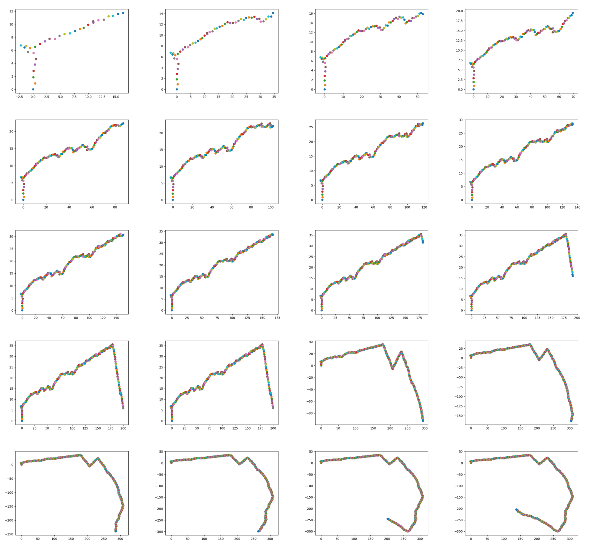
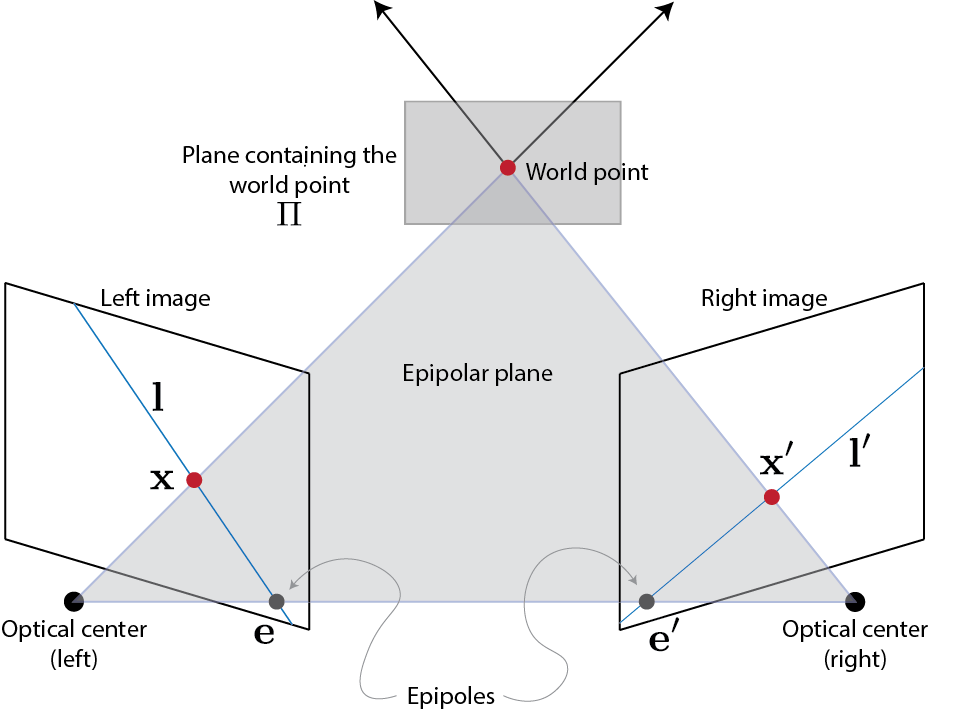
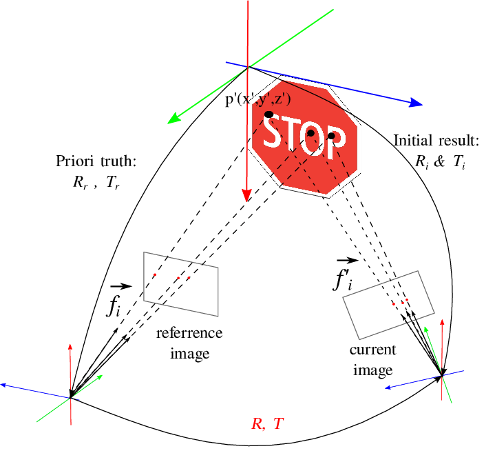
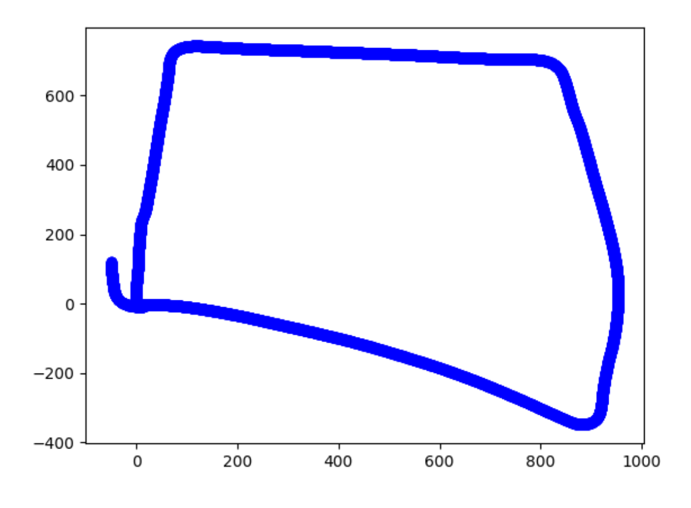

Teaching a camera to know where it is, one frame at a time.
PerceptionUniversity of Maryland2020
Visual odometry estimates a camera's own trajectory purely from the images it captures, no GPS, no wheel encoders. It's one of the core building blocks of SLAM. This project builds the full pipeline from scratch, given raw driving-sequence frames and the camera's intrinsic parameters, and estimates the camera's path frame by frame.

Estimated camera trajectory across the driving sequence
Getting the data ready
The raw dataset arrives as Bayer-pattern images, not standard color, so the first step is demosaicing with GBRG alignment:
From there, the camera's intrinsic parameters (focal lengths, principal point, and a lookup table) come from the calibration files, and every frame gets undistorted using that lookup table before anything else touches it. Skipping either step, wrong color conversion or uncorrected lens distortion, breaks every downstream estimate, since the whole pipeline assumes a clean, calibrated pinhole-camera model.
Finding what moved between frames
Estimating motion between two frames starts with finding the same physical points in both. I tried both ORB (Oriented FAST and Rotated BRIEF) and SIFT (Scale-Invariant Feature Transform) for keypoint detection, matched with a brute-force descriptor matcher. ORB runs faster and matched well enough to use for the full pipeline.
Matched points aren't all correct, SIFT and ORB both produce outliers, so the next step is estimating the fundamental matrix (F), the 3×3 matrix that encodes the epipolar geometry between the two camera views, using the Eight-Point Algorithm inside RANSAC: repeatedly sample 8 point correspondences, solve for F via SVD, and keep whichever F has the largest set of inlier points satisfying the epipolar constraint x'ᵀFx = 0. Running that over many random samples and keeping the best-supported result is what makes the estimate robust to the outliers ORB and SIFT both leave behind.

Epipolar geometry: the same 3D point projects to corresponding points in each view
From matrix to motion
The fundamental matrix alone doesn't give you a metric camera pose, it needs to be converted to the essential matrix E = KᵀFK using the calibration matrix K, then constrained to rank 2 through SVD before it yields a usable rotation and translation. Decomposing E gives four candidate camera poses; the correct one is picked using the cheirality condition, checking that triangulated 3D points actually sit in front of both cameras, not behind either one.

Linear triangulation, used to disambiguate the four candidate camera poses
From there, both the triangulated 3D points and the camera pose get refined nonlinearly, minimizing reprojection error (the gap between where a 3D point actually lands in the image and where the current pose estimate predicts it should) instead of stopping at the linear, algebraic-error solution.
Results
The full from-scratch pipeline, Eight-Point plus RANSAC for the fundamental matrix, followed by pose recovery and triangulation, successfully reconstructed the camera's trajectory across the driving sequence. As a sanity check, I also ran the same sequence through OpenCV's built-in cv2.findEssentialMat and cv2.recoverPose to compare against the from-scratch implementation.

Trajectory from OpenCV's built-in essential-matrix pipeline, for comparison
Where the estimate broke down
Three things stood out as genuinely unresolved rather than just implementation bugs: the fundamental matrix occasionally produced elements far larger than expected, ORB and SIFT didn't always agree on the same matched points for identical frame pairs, and running the same code on different machines produced visibly different camera-center trajectories. That last one in particular points at floating-point or library-version sensitivity in the SVD steps rather than a logic error, since the algorithm itself is deterministic given identical inputs. None of these broke the pipeline outright, but they're the reason I'd trust this implementation for a relative-motion estimate over a short sequence more than for long-term absolute trajectory tracking without loop closure or fusion with another sensor.